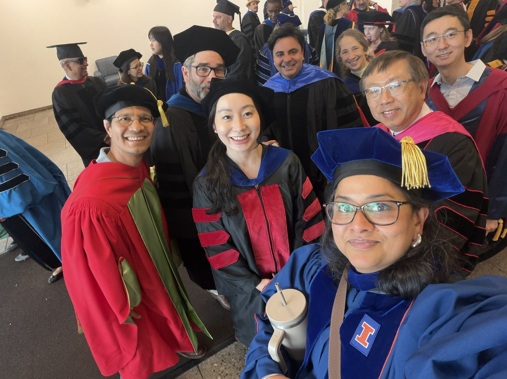
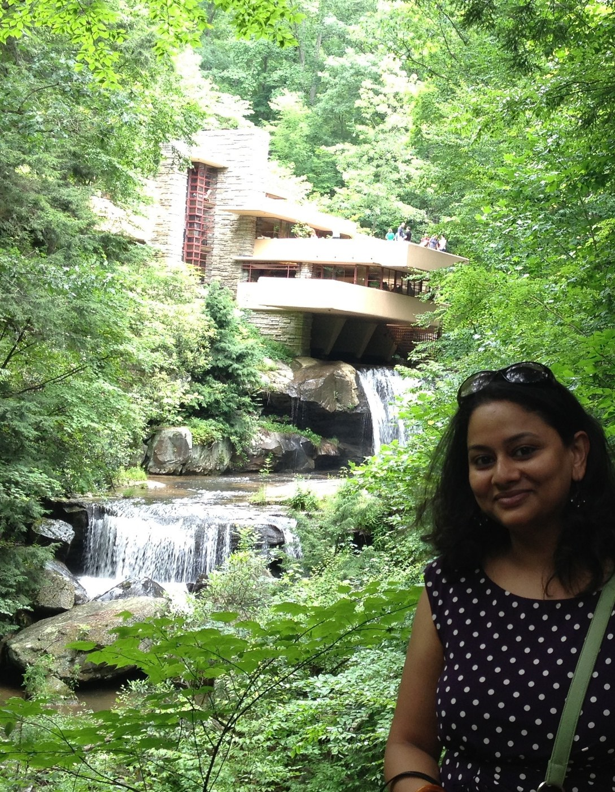

About
Scholar, planner, educator, and program builder.
My academic and professional work is rooted in equity-oriented planning, community development, and the practical work of building institutions, tools, and pathways that expand access to opportunity.
Biography
Dr. Sowmya Balachandran is an Assistant Professor in the Department of Urban Planning and Community Development in the School for the Environment at the University of Massachusetts Boston. Her research examines the spatial, institutional, and policy conditions that shape opportunity, housing stability, transportation access, community development, and regional resilience.
Her work is informed by more than two decades of planning and community development experience across India, Mauritius, Mexico, Cuba, Bangladesh, Indonesia, and the United States.
Across research, teaching, and service, she advances engaged scholarship through peer-reviewed publications, policy reports, student research, community-facing planning products, and applied tools for planners and practitioners.

Professional trajectory
A career connecting architecture, planning practice, housing innovation, community development, and academic research.
Bachelor of Architecture, Maharaja Sayajirao University of Baroda.
M.Tech. in Urban and Regional Planning, CEPT University.
Co-founded Alchemy Urban Systems.
Co-founded DBS Affordable Home Strategy.
Established Griha Pravesh.
Completed Ph.D. in Regional Planning at UIUC.
Visiting Assistant Professor, Florida State University.
Assistant Professor, University of North Texas.
Assistant Professor, University of Massachusetts Boston.

Architecture and planning
Planning begins with relationships among people, buildings, institutions, and landscapes.
My professional formation began in architecture and expanded into regional planning, housing systems, community development, and spatial justice.